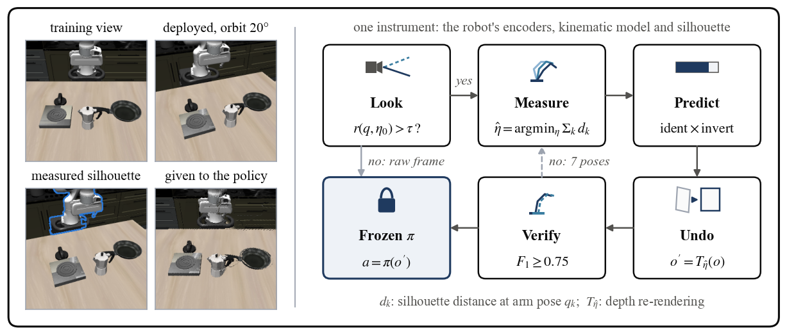
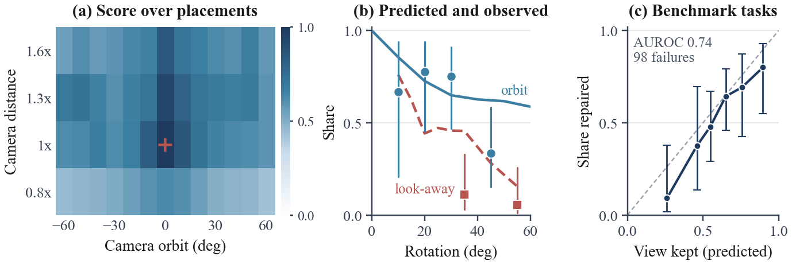
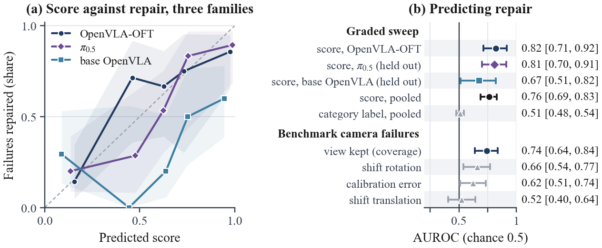
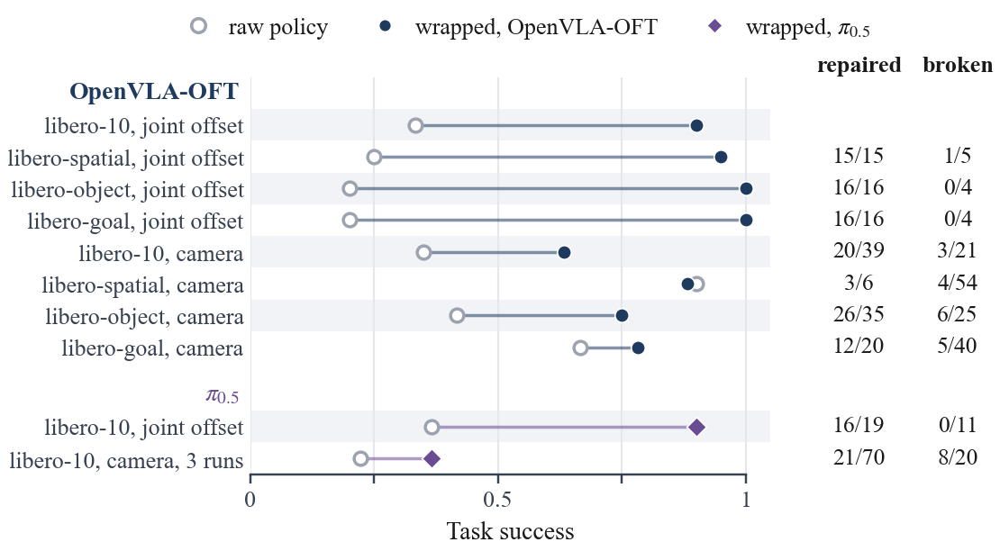
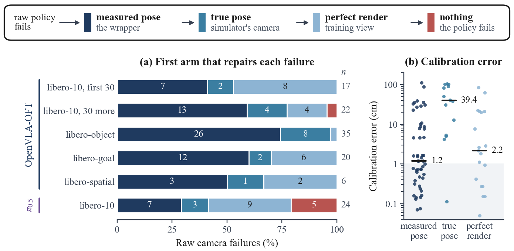
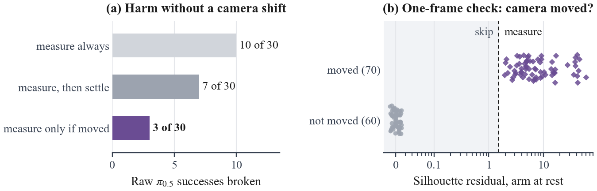
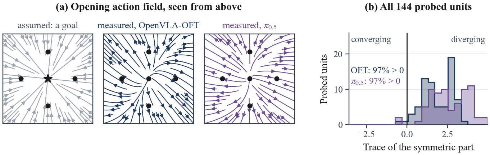
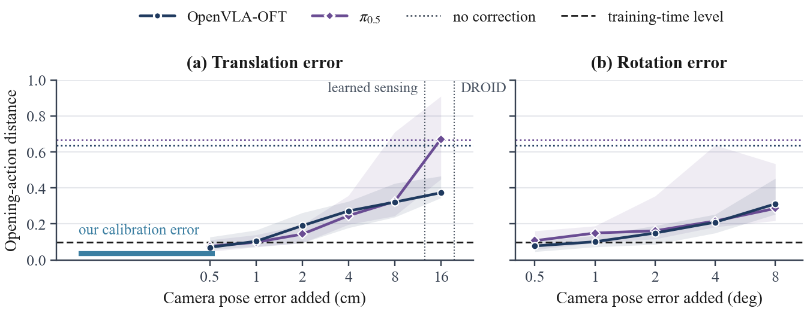
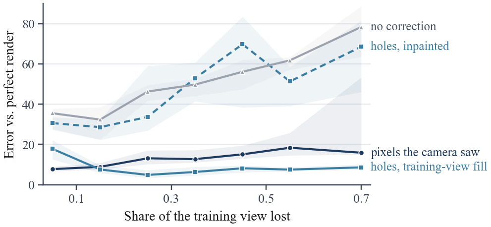
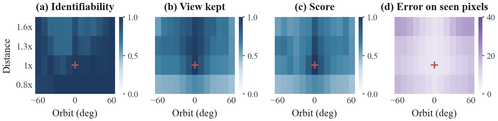

fig_envelope: {'bench': (98, 0.743, 0.638, 0.84), 'conds': {'look_away_35': (2, 18), 'look_away_55': (1, 18), 'orbit_az10': (2, 3), 'orbit_az20': (7, 9), 'orbit_az30': (9, 12), 'orbit_az45': (5, 15), 'pullback_1.3': (5, 8)}}
fig_score: {'score, OpenVLA-OFT': (0.823, 0.714, 0.919), 'score, $\\pi_{0.5}$ (held out)': (0.809, 0.7, 0.912), 'score, base OpenVLA (held out)': (0.675, 0.514, 0.82), 'score, pooled': (0.763, 0.689, 0.831), 'category label, pooled': (0.51, 0.477, 0.543), 'view kept (coverage)': (0.743, 0.638, 0.84), 'shift rotation': (0.658, 0.541, 0.77), 'calibration error': (0.621, 0.508, 0.735), 'shift translation': (0.52, 0.405, 0.645)}
fig_ladder: [('libero-10, first 30', 'OpenVLA-OFT', defaultdict(, {'recovered by measurement': 7, 'not identified': 2, 'not invertible': 8}), 17), ('libero-10, 30 more', 'OpenVLA-OFT', defaultdict(, {'recovered by measurement': 13, 'not identified': 4, 'not invertible': 4, 'policy': 1}), 22), ('libero-object', 'OpenVLA-OFT', defaultdict(, {'recovered by measurement': 26, 'not invertible': 1, 'not identified': 8}), 35), ('libero-goal', 'OpenVLA-OFT', defaultdict(, {'recovered by measurement': 12, 'not invertible': 6, 'not identified': 2}), 20), ('libero-spatial', 'OpenVLA-OFT', defaultdict(, {'recovered by measurement': 3, 'not invertible': 2, 'not identified': 1}), 6), ('libero-10', 'pi0.5', defaultdict(, {'recovered by measurement': 7, 'policy': 5, 'not identified': 3, 'not invertible': 9}), 24)]
fig_harm: ([10, 7, 3], 30)
fig_field: {'OpenVLA-OFT': (72, 0.9722222222222222), 'pi0.5': (72, 0.9722222222222222)} 








